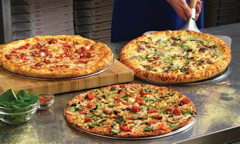
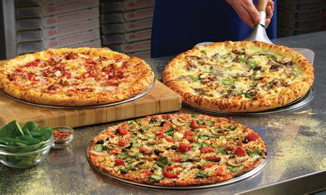

Ihr habt hunger auf frische, knusprige Pizzen? Dafür brennen nicht nur unsere Öfen, sondern auch unsere Herzen. Pizzaria da Marino versorgt euch täglich mit frischer und hausgemachter Pizza- und dies schnell und einfach. Die Gründer Lisa Addai und Selina Kurt gründeten vor 50 Jahren den ersten Pizza de Marino Store- Seitdem bemühen wir uns jeden Tag unseren Kunden mit unseren leckeren Pizzen ein Lächeln ins Gesicht zu zaubern.

 

Bei uns steht Qualität immer an erster Stelle. Jeden Tag sorgen wir mit frischen Zutaten und unseren hausgemachten Teig für ein unvergessliches Erlebnis. Überzeuge dich selber jetzt und durchstöbere unsere Speisekarte .
Bestelle jetzt bei Pizza da Marino mit nur wenigen Klicks die Pizza deiner Wahl und stille deinen Hunger! Wir liefern dir deine Pizza schnell und einfach nach Hause. Natürlich kannst du auch persönlich bei uns vorbeischauen und die Pizza abholen oder sie bei uns essen. Unsere Öffnungszeiten und Adresse findest du hier .